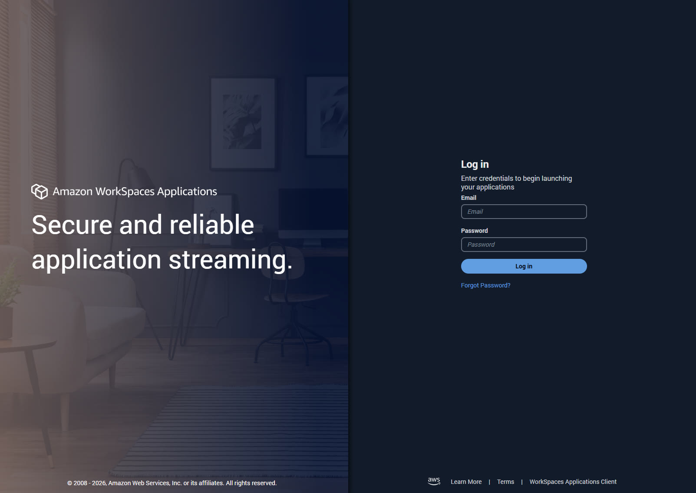
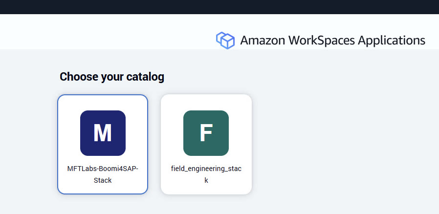
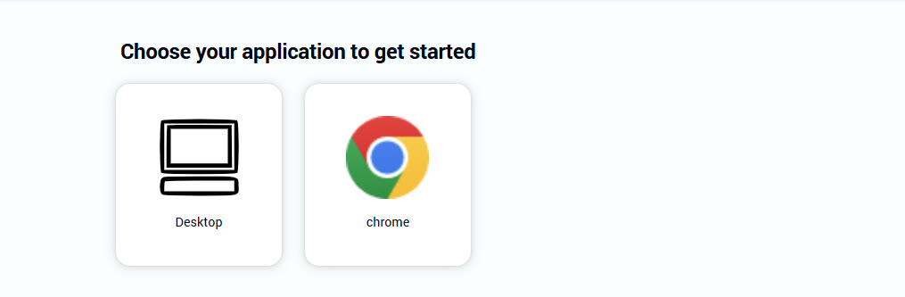

Phase 1 of 9
1
Get into your lab environment
Every registered workshop user gets a temporary, pre-configured VM — no local software to install, no infrastructure to request.
⏰ ~3 min1
Log in to your Amazon WorkSpaces environment
Go to:
https://appstream2.us-east-1.aws.amazon.com/userpools#/signin?ref=7nLyvX7ryL
Enter the email and password from your registration email and select Log in. WorkSpaces gives you a clean Windows desktop in the browser, in the cloud — this is where you'll do all of the install and testing work below.

2
Choose your catalog
After logging in, you'll be asked to choose a catalog. Select MFTLabs-Boomi4SAP-Stack — not field_engineering_stack. Once you select it, an application picker appears below it on the same page.

3
Choose your application to get started
Below the catalog picker, select Desktop (not chrome). This launches your full Windows desktop, which is where you'll do the rest of this lab.

Following this outside a workshop?
This guide assumes the pre-provisioned workshop VM and account. If you're doing this on your own instead:
- You'll need a machine with Windows installed — the install steps in this lab are Windows-specific.
- You'll need your own Boomi MFT account. Workshop participants get one pre-provisioned automatically (check your inbox for a registration email) — everyone else can sign up for a Boomi MFT trial first.